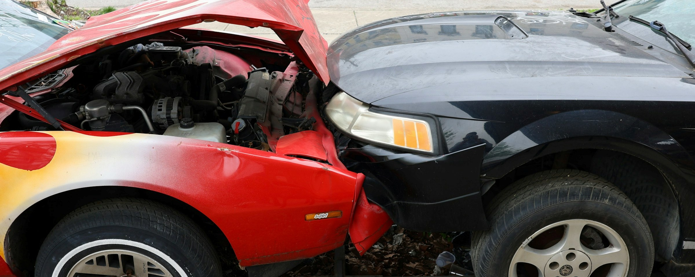

More Than 500 Lives a Year: When Serbia’s Roads Are Deadliest
Fatal traffic crashes in Serbia remain stubbornly stable despite tougher laws, while data reveals when and how most lives are lost on the roads.
Fatal traffic crashes in Serbia remain stubbornly stable despite tougher laws, while data reveals when and how most lives are lost on the roads.

At least 500 people are killed on Serbia’s roads each year, roughly matching the average number of fatal traffic accidents recorded annually. One in three of these crashes occurs during the summer months, while a quarter take place between 4 p.m. and 7 p.m. Despite new laws, stricter penalties and increasingly automated traffic enforcement, the number of fatal traffic accidents has remained largely unchanged for years. Fatal crashes account for about 2% of all traffic accidents.
Statistics from Serbia’s Traffic Safety Agency point to a concerning pattern: young people aged 15 to 30 represent one of the most vulnerable groups. Often victims of inexperience, speed, or peer pressure, they are frequently involved in crashes occurring during the late afternoon “high-risk hours.” As the state relies on legal frameworks and tougher penalties, a broader question emerges: can road safety be achieved through enforcement alone, or is something more than the fear of punishment required to reduce fatalities to zero?
Serbia’s current Road Traffic Safety Law dates to 2009 and has been amended several times since. The latest amendments entered into force in 2025, while a new draft currently under discussion proposes even stricter penalties. Despite this, fatal traffic accidents over the past decade have ranged between 463 and 557 per year. The scale of the problem is most clearly seen in one figure: the total number of traffic accidents is roughly 50 times higher.
The lack of major change between 2016 and 2025 stands out. Despite repeated increases in penalties, the data show that enforcement has not consistently translated into improved road safety. Stricter fines have often followed periods of heightened public attention after severe crash clusters, rather than serving as a preventive mechanism aimed at long-term behavioural change.
Media coverage often focuses on large multi-vehicle collisions, but the data tell a more complex story.
In around 30% of fatal traffic accidents, only a single vehicle is involved, typically in cases of roadway departure caused by speed or fatigue. One in four fatal crashes involves a pedestrian. Head-on collisions account for only one in ten fatal accidents.
Contrary to the common perception that winter months are the most dangerous, the data show relatively stable accident numbers throughout the year.
Fatal outcomes, however, follow a distinct seasonal pattern. One third of all fatal traffic accidents occur between mid-July and the end of October.
August records the highest number of deaths, while July sees the most single-vehicle roadway departures. While pedestrians face higher risk in winter due to reduced visibility, summer brings increased transit traffic across Serbia, alongside driver fatigue and reduced attention levels.

The highest number of accidents occurs during peak traffic hours, with fatal crashes peaking at 5 p.m. However, the likelihood that a crash will be fatal is highest between midnight and 6 a.m., when fatigue, speeding, and driving under the influence of alcohol or psychoactive substances disproportionately affect younger drivers.
It is important to note that the Ministry of Interior’s database does not directly record contributing factors such as alcohol use or exact speed in each crash, which limits deeper causal analysis. In addition, the number of fatal traffic accidents does not correspond exactly to the number of fatalities, as a single crash can claim multiple lives. These figures serve primarily as a warning, not just a statistic.
In recent years, Serbia’s Traffic Safety Agency has shifted focus from pure enforcement toward educational campaigns such as “Attention Now,” aimed at child road safety, seatbelt campaigns for rear-seat passengers, and driver training programs using rollover and head-on collision simulators. Projects such as “Vision Zero” suggest that road safety is not achieved solely through legal reform, but through systemic changes.